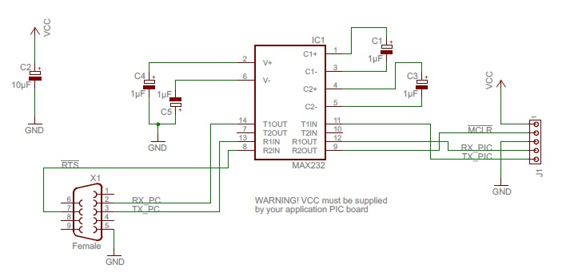
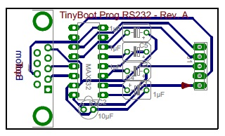
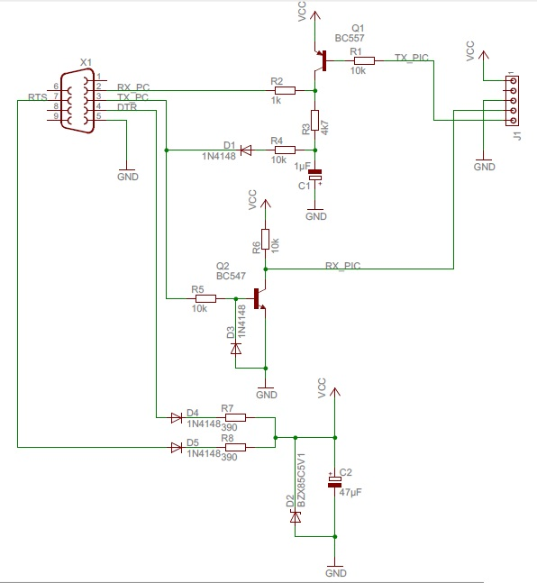
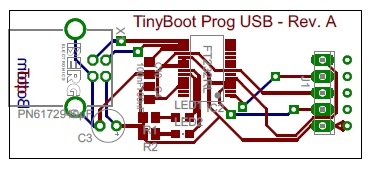
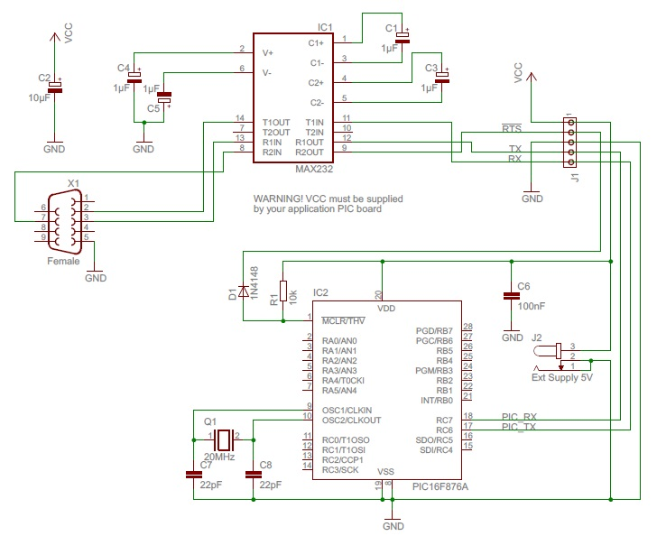
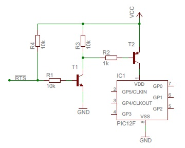

Tiny AVR/PIC Bootloader+Hardware Connections:Introduction"Tiny PIC Bootloader +" is only able to transfert data to the PIC devives via a serial connection (it's called UART (or USART) on a microcontroller and, in the past, it was called RS232 on a PC).PrerequisiteBefore you can use the bootloader with your PIC, you must transfert the corresponding bootloader firmware in the PIC device with an external programmer (i.e. ICD2, Pickit 3, etc...). This must be done only once.If the specific bootloader firmware for your PIC is not included in the "Tiny PIC Bootloader +" archive or you want to use a different Baud Rate and/or UART port, you must read "[Firmwares:] modify for PICxx" page to adapt an approching one. How to get serial data from the computer?They are several possibilities:You have an RS232 port on your computeur:The
simpliest way is
to use a MAX232 level converter:
Here is a schematic and a board you can use:   Download the EagleCAD project (PDF files included). Or you can use this "Auto Powered RS232" board:  You only have USB ports on your computeur:
 Download the EagleCAD project (PDF files included). How to connect to the PIC?Connections:
Example:Here is an example
with a PIC16F876A connected to the PC via a MAX232.
But it will be very similar with an other PIC or with an USB to RS232 adapter/card.  Note about D1 diode: it seems that PIC devices dislike to be directly pull to VCC. With this diode, when !RTS is set to 5V then !MCLR is set to 5V via R1. And when RTS is set to GND then D1 diode permits !MCLR to be put to GND. Nevertheless, it could work with !RTS directly attached to !MCLR. Software Reset on a PIC without !MCLR pin (and without "Auto Powered RS232" board):WARNING: this solution hasn't been tested! 
|